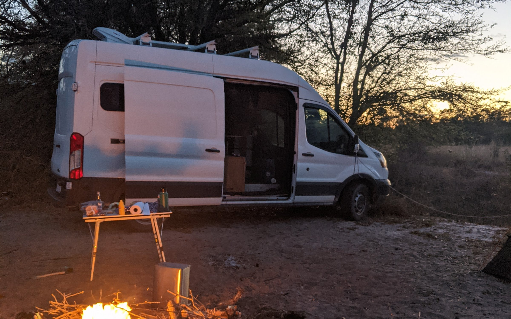

Electrical
- 2 × Battle Born 100Ah lithium
- 385 W solar: Renogy 175 W + Newpowa 210 W
- Victron SmartSolar MPPT 100/30
- Victron BMV-712 battery monitor
- Victron Orion-Tr DC-DC charger
- Renogy 3000 W pure sine inverter
- 12V outlets, USB, AC hardwire

For Sale · Asheville, NC
I built this van out and lived in it for two and a half years. It's a high roof on the 148″ wheelbase, so I could stand up inside. Clean title, never been in an accident, 310 hp 3.5L EcoBoost, and 25 service records, because I never let the maintenance slide.
Click any photo to see it full size.
More photos to come. I'm reshooting the interior properly. If there's something specific you want to see before then, just ask and I'll send it over.
What I put into it.
I bought this van in March 2020 and built it out myself. Then I lived in it for two and a half years, which means nothing in here was built to photograph well and then left alone. All of it got used daily, and the things that didn't work got changed until they did.
Being straight with you: the interior isn't finished. The systems are: the water system works and needs nothing, and the electrical is done and has room to grow. What's not done is the cabinetry and finish work. So this suits someone who wants working systems underneath and the freedom to finish it their own way, rather than someone after a turnkey camper.
Everything below is what's actually in it, and anything that still needs doing is in What It Needs.
Battle Born lithium with Victron control gear throughout, all of it Bluetooth so you can watch the system from your phone. Two 100Ah batteries in parallel for a 12 V, 200 Ah bank, and 385 W of solar, a Renogy 175 and a Newpowa 210, into a controller rated for 440 W, so the array is properly matched to it. One thing to be clear about: right now solar is the only thing charging the bank. There's no shore power fitted, and the DC-DC charger is currently unhooked. More on that in What It Needs.
I pulled out all the factory audio and replaced the head unit and every speaker. It's a front stage plus a sub: two door woofers, two tweeters in the A-pillars, one subwoofer, all off a single four-channel amp. About $1,000 in parts from Crutchfield, and I installed it myself. I have the receipts.
It's great for music, but where it really earned its keep was audiobooks on long drives. Tweeters at ear level and a sub carrying the low end mean you're not fighting road noise to catch every word at highway speed. I got through a lot of books in this van.
8.95″ floating screen on a single-DIN chassis, so it fits without blocking the vents or the hazard button. The mount adjusts three ways. Wired CarPlay and Android Auto, Bluetooth calling and streaming.
400 W RMS, four channels, Class D. Channels 1–2 run the front components and 3–4 are bridged to the sub at 200 W. It's tiny, 1.5″ × 4.25″ × 6.75″, which is why I could fit it where I did.
6.75″ woofers in the doors, and I put the titanium tweeters up in the A-pillars so they're at ear level instead of firing at your shins. External crossovers, 100 W RMS each.
An 8″ W3v3 in a slot-ported box from JL. It's rated 250 W and I'm feeding it 200, so it's matched rather than strained. Only 5.125″ deep, which is why it fits without costing me storage.
This is the upgrade I'd tell anyone buying a windowless van to make first. A high roof cargo van has no rear glass at all. The standard mirror shows you the inside of the van. The WOLFBOX replaces the mirror with an 11″ screen fed by a rear camera, so you get a proper rear view back. Between that and the side mirrors there are virtually no blind spots, and it makes a real difference on the highway. It doubles as a backup camera, which the van otherwise doesn't have.
I went with a Separett Tiny 1270, a urine-diverting waterless toilet. No black tank, no chemicals, no water hookup. Solids and liquids separate at the bowl into their own containers. Bought new in 2022 for $650, and after two and a half years of living with it I'd buy it again.
A MaxxAir MaxxFan Deluxe in the roof. I bought the powered-lid version with the remote. Ten speeds, reversible for intake or exhaust, and the built-in rain shield means I could leave it running through a storm. This is the thing that made the van liveable in summer.
I bought a maXpeedingrods 12V 5kW diesel air heater new in November 2022. There are only about 100 hours on it, call it 20 litres of fuel in its whole life, so it's barely broken in. Runs off a Bluetooth app, a remote, or the LCD panel. It's currently disconnected, and I've been upfront about that in What It Needs.
All of this comes off the VIN, the door jamb sticker, or the CARFAX, not off the top of my head.
I pulled this CARFAX in February 2020 while I was shopping for the van, before I bought it. Happy to send the full PDF.
Nine records on file with CARFAX from before I owned it, running through 2019.
Bill Estes Ford, Brownsburg, IN. Pre-delivery inspection completed.
Bill Estes Ford. Maintenance inspection and driveshaft replacement under warranty.
Titled in Indiana. Color noted as White.
Midas, Brownsburg, IN.
Bill Estes Ford. Oil and filter changed.
Tire Discounters, Hillsboro, OH. Tires replaced, tire repaired, oil and filter changed.
Bill Estes Ford. Rear brake pads replaced, rotors resurfaced, alignment performed, tires balanced, oil and filter changed.
Bill Estes Ford. Brakes checked, oil and filter changed, alignment checked.
Titled and registered in Brookville, IN. Last odometer reading reported to CARFAX.
I'm the third owner. I bought it in March 2020, and there are sixteen documented services since, picking up exactly where the CARFAX record stops. After I stopped living in it I never let it sit more than two weeks without driving it, and those drives were long enough to bring everything up to temperature. That's why the recent mileage is low without the van having been parked and forgotten.
The bigger jobs, beyond routine oil changes.
I did new front hub assemblies and a complete front brake kit at the same time with drilled and slotted rotors, carbon-fiber ceramic pads, stainless hardware. I bought the heavy-duty tier of both rather than the cheap version, and there are only 2,513 miles on them.
Replaced the throttle body and put in a new engine air filter.
Upgraded spark plugs, a full coolant flush, and new front pads and rotors.
Put a full set of 30.5″ Falken Wildpeak AT3W all-terrains on it. Much better than stock for where I was taking it. These are the tires that now need replacing.
Every service since I bought it. I have the receipts.
| Date | Mileage | Service |
|---|---|---|
| Apr 30, 2026 | n/a | Oil and filter changed |
| Nov 26, 2025 | 116,963 | Oil and filter changed |
| May 17, 2025 | 116,103 | Oil and filter changed |
| Oct 21, 2024 | 114,566 | Oil and filter changed |
| Sep 8, 2024 | 114,450 | Front wheel hub assemblies Mevotech TTX TXF40305; front drilled & slotted rotors and carbon-fiber ceramic pads Power Stop Z36 Truck & Tow K7150-36 |
| Aug 12, 2024 | 114,244 | New engine air filter; throttle body replaced |
| Feb 2, 2024 | 111,942 | Oil and filter changed |
| Sep 8, 2023 | 108,150 | Oil and filter changed |
| Apr 5, 2023 | 102,152 | Oil and filter changed |
| Sep 10, 2022 | 96,500 | Oil and filter changed |
| Jun 12, 2022 | 93,000 | Upgraded spark plugs; engine coolant flush; new front brake pads and rotors |
| Mar 18, 2022 | 89,706 | Oil and filter changed |
| Dec 3, 2021 | 85,728 | Oil and filter changed; tires replaced with 30.5″ Falken Wildpeak AT3W |
| Aug 2, 2021 | 75,344 | Oil and filter changed |
| Mar 13, 2021 | 68,132 | Oil and filter changed |
| May 25, 2020 | 58,080 | Oil and filter changed |
Two things I'd rather tell you now than have you work out later.
The 30.5″ tires are 8.8% bigger than the factory 235/65R16 and I never had the speedometer recalibrated. So against the 116,963 the odometer showed in November 2025, the real number is around 119,700. The speedo reads slow by the same margin: an indicated 60 is closer to 65.
The receiver is rated to 8,000 lb, but that's just the hitch. The van has no factory tow package, so Ford rates it at 5,300 lb, and that's the number that matters. The 4-pin wiring is lights only, no trailer-brake circuit.
I've been part-way through putting things back together, so a few items are unhooked. All of it is hardware that's already here and works. It needs connecting, not buying. You'd find every one of these on a walkaround anyway, so here they are up front.
The Falkens are done. I put them on in December 2021 and there are roughly 34,000 ground miles on them since. They'll get you home, but budget for a set.
The systems are done. Water works and needs nothing, electrical works and has room to expand. What's left, specifically: the ceiling isn't insulated or finished, there's no bed or mattress, and there's no stove or cooktop.
On the ceiling specifically: the wooden ribs are already fastened to the body and the 8 dimmable puck lights come with the van, so it's a finishing job, not a from-scratch one. Walls are already done in 3M Thinsulate and the floor is ¾″ ply over 1″ foam board, so the hard, invisible part of the insulation is behind you.
The Victron Orion-Tr is installed and works. It was wired to the starter battery and I disconnected it. Combined with there being no shore power fitted, that means solar is currently the only thing charging the bank. Reconnecting it gives you alternator charging back, and it's the highest-value job on the van.
The ARB 12V fridge comes with the van but isn't installed right now. It wires straight to the fuse panel, and it's an easy job, not a project.
The heater itself is close to new: a maXpeedingrods 12V 5kW I bought in November 2022, with maybe 100 hours on it. It just needs hooking back up. It comes with the van either way, and I've priced it as-is.
These aren't faults I know of. They're just things I have no paperwork for, so price them in.